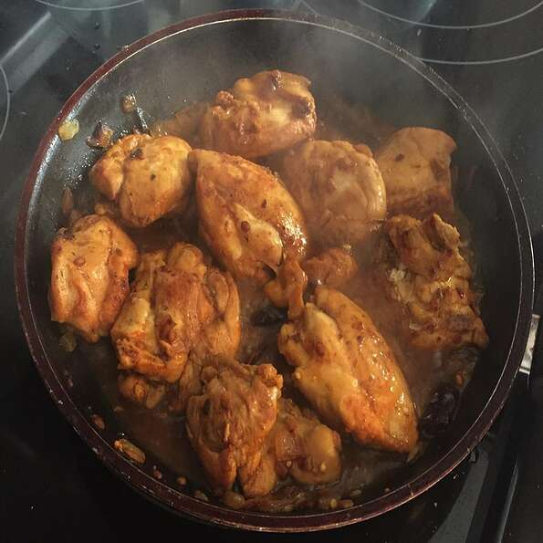

A spicy and flavorful Indian chicken dish that can be served with rice, dhal, or simply eaten on its own!
Ingredients
1 pound chicken thighs, or more to taste
½ teaspoon ground turmeric
½ teaspoon ground cumin
½ teaspoon chile powder
salt to taste
3 tablespoons vegetable oil
½ onion, chopped
2 dried red chile peppers, or more to taste
1 teaspoon hulled, split pigeon peas (toor dal)
½ teaspoon whole fenugreek seeds
½ cup water
Directions
Combine chicken thighs, turmeric, cumin, chile powder, and salt in a large bowl; mix until thoroughly coated. Cover with plastic wrap and let marinate in the refrigerator, about 15 minutes.
Heat oil in a large skillet over medium heat. Add onion, chile peppers, split pigeon peas, and fenugreek seeds; cook and stir until fragrant, about 3 minutes. Add chicken; cook until browned, about 5 minutes per side. Reduce heat and stir in water. Scrape up browned bits from the bottom of the skillet and simmer until flavors combine, about 7 minutes.
Nutrition Facts
Per Serving: 284 calories; protein 18.3g; carbohydrates 3.7g; fat 21.6g; cholesterol 63.8mg; sodium 95.9mg.